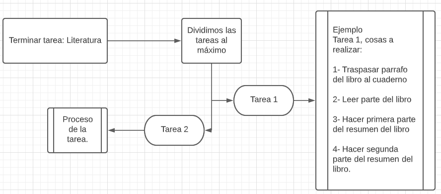

Estudiar - Volver al inicio
Siempre que te decia que estaba estudiando, lo estaba haciendo más o menos a mi manera. De hecho, ahora mismo lo estoy haciendo
porque estoy programando esto. Tengo unos cuantos días para llenar toda esta página de contenido para tí, y los aprovecharé tanto como pueda
hacerlo, porque finalmente, practicar es aprender.
Lo que quiero lograr con este apartado es lograr darte herramientas de estudio para cuando yo no esté. Y que, por medio de las herramientas que
te daré, seas capaz de aprender lo que tengas que aprender. Por lo que he visto y oido de cuando estamos jugando, siempre has aprendido más
por lo visual-auditivo (viendo como se hace, o escuchand mis instrucciones). Por lo que quiero
mostrarte las siguientes cuestiones que pueden
servirte mucho al momento de formarte.
Primero, sobre tí.
Yo se que lo complejo te da wewa, por lo que la que te voy a plantear es simple. Los sistemas que te voy a mostrar ahora son
increíblemente básicos, pero al mismo tiempo, muy eficientes para lograr tu objetivo.
Sistema G.T.D
El sistema G.T.D (sí, ya se que te da wewa leer "sistema"), se concentra en "Dejar las cosas hechas". Funciona de la siguiente forma. Tú tienes un
objetivo, por ejemplo, terminar de organizar fechas. El sistema G.T.D lo pondrá de la siguiente forma:

Como se ve, la idea del sistema es dividir las tareas hasta su minima expresion. Es evidente que no necesitas escribirlo todo, como en el esquema, pues
realmente solo es necesario que lo tengas en tu cabeza. Ahora, ¿porqué dividiríamos tanto las tareas? - Simple, porque si dividimos las taréas al maximo
, estaremos viendo realmente avanzamos y somos productivos.
Este sistema sirve para estudiar tambien, que es el objetivo primario del apartado web que estoy haciendo ahora, al momento de escribir. Tan solo debes
dividir tu estudio hasta que quede en su minima expresión, y estudiarlo hasta que lo entiendas. Cuando lo entiendas, está listo.
Como estudiar
Yo se que suena un poco tonto decirte como estudiar, pero por lo menos lo que es yo, no se estudiar, y lo unico que hago al momento de intentar aprender
algo es pegarme una y otra vez contra el material de estudio. Pero, en corto: como estudiar.
Lo ideal de estudiar, al menos para tí, es la recopilación y
entendimiento visual-auditivo del material.
Claro, pero es muy fácil ponerlo así. Lo que te recomiendo hacer es que, en el momento que necesites entender
algo, aparte de las clases que tengas, ponte en Youtube el video más corto que encuentres sobre el tema y escribe sobre el, con tus propias palabras. Así
puedes dejar registro de lo que vas aprendiendo, y compararlo con la información que se te dió en clase, o con la información del video.
Video de Youtube para intentarlo: ¿qué es una varible?
Estoy consciente de que te dará flojera siquiera ver el video mivida, asi que yo haré el intento por ti.
Basícamente el video explica que una variable es una
caja que puede tener cualquier tipo de valor dentro, por ejemplo, dentro puede tener una palabra, un numero, etcétera. Y como es una variable, puede variar,
y cambiar su valor. Evidentemente las variables tienen definiciones mucho más formales. Aquí va la explicación real.
- Una variable es un espacio de la memoria en una computadora que almacena un valor que puede ser un número, una cadena de carácteres, y que según
avance el código, puede serle asignado cualquier tipo de otro valor mientras las reglas de programación lo permitan.
se que te dio flojera leer eso. me gustas mucho c:
Volver al inicio